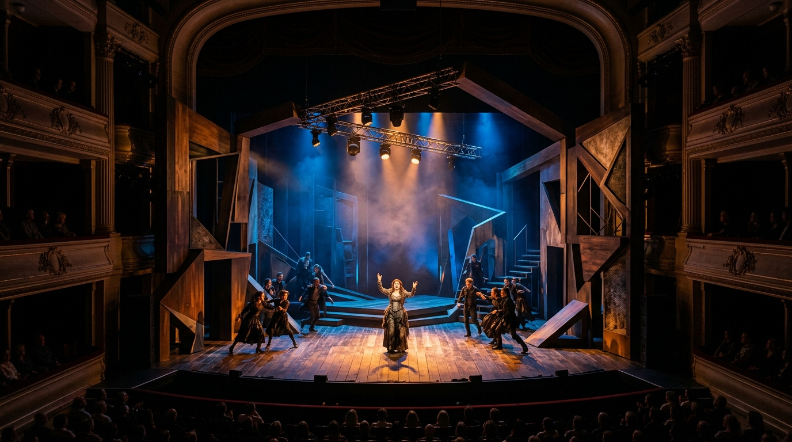

Investigación y Análisis
Lectura semiótica y dramatúrgica del espacio escénico. Deconstrucción de poéticas realistas, abstractas, operísticas y sitios no convencionales.

Espacio para la investigación de las poéticas espaciales contemporáneas, la materialidad de la escena y la práctica viva del montaje teatral. Prof. Titular Analía Quiroga • FAD • Universidad Nacional de Cuyo
Lectura semiótica y dramatúrgica del espacio escénico. Deconstrucción de poéticas realistas, abstractas, operísticas y sitios no convencionales.
Del croquis sensible a la maqueta a escala y la panelería técnica. Construcción de la Biblia de Producción, despieces y memorias conceptuales.
Experimentación en escala real 1:1 en el Aula Teatro. Articulación sinestésica entre volumen físico, luz de sala, sonido y movimiento de cuerpos.
Un espacio pedagógico de formación proyectual guiado por especialistas en escenografía, espacialidad teatral y realización escenotécnica.
Especialista en diseño escenográfico, dramaturgia del espacio y realización teatral. Con amplia trayectoria artística y docente en la Facultad de Artes y Diseño de la UNCUYO, lidera la formación proyectual promoviendo el diálogo entre las tradiciones de la puesta en escena clásica, los formatos monumentales de la Vendimia y las vanguardias escénicas expandidas.
Aula Taller de Escenografía · Edif. Talleres
Aula Teatro FAD · Práctica Escénica
Aula Taller de Escenografía · Edif. Talleres
Aula Teatro FAD · Montaje & Realización
Cinco dimensiones articuladas de saberes teóricos, experimentación matérica, tecnologías aplicadas y prácticas en salas escénicas de Mendoza.
Indagación sobre los modelos espaciales históricos y de vanguardia. La tensión dialéctica entre escenografía naturalista/realista y abstracción formal. Análisis de la caja a la italiana, dispositivos escénicos bifrontales y circulares.
Lectura semiótica del espacio y memoria conceptual de una obra dramática elegida.
Estudio de las manifestaciones escénicas a escala monumental y territorial. La Fiesta Nacional de la Vendimia como dispositivo identitario complejo, integrando arquitectura paisajística, dinámica de masas y utilería.
Diseño de elemento de utilería mayor con articulación mecánica y prueba de resistencia física.
Transformación de la intención poética en materia corpórea. Comprensión táctil y volumétrica de la física del escenario, sistemas de sustentación y revestimiento escénico.
Maqueta escenográfica a escala 1:25 con panelería operativa y muestrario de texturas pictóricas.
La gestión integral de la producción teatral. Cómo documentar, cotizar y coordinar la realización técnica para garantizar la viabilidad constructiva de la puesta en escena.
Dossier completo de la Biblia de Producción lista para taller de carpintería y herrería.
Fronteras contemporáneas del diseño del espacio. Hibridación de dispositivos analógicos y herramientas digitales de última generación para potenciar la narrativa dramática.
Render interactivo y propuesta de mapeo digital sincronizado con la espacialidad física.
Una dinámica participativa de taller que conjuga el trabajo manual en mesas de proyecto con un sólido ecosistema digital universitario.
Las clases combinan exposiciones dialógicas con el trabajo proyectual continuo. Los estudiantes exploran maquetas de trabajo, debaten poéticas en plenario y experimentan con materiales reales de realización escénica.
La cursada incluye recorridos técnicos formativos a los escenarios más relevantes de la provincia. Los alumnos inspeccionan parrillas técnicas, varas, tiros contrapesados y cajas a la italiana junto a maquinistas y realizadores.
Integración de plataformas institucionales UNCUYO y software de vanguardia proyectual.
Repositorio de consignas, entrega de trabajos prácticos, foros de debate y acceso a bibliografía digitalizada.
Plataforma Oficial UNCUYOModelado volumétrico, simulación de tiros de visual del público, plantas acotadas y perspectivas axonométricas.
Modelado EspacialUso crítico de IA (Midjourney, DALL-E, ChatGPT) para conceptualización rápida de atmósferas y moodboards escénicos.
Recurso CreativoTutorías sincrónicas, avisos instantáneos de cátedra y maquetación gráfica de láminas de presentación y dossiers.
Comunicación & DiseñoCriterios formativos basados en el seguimiento continuo del proceso proyectual, la solvencia técnica y la defensa del Trabajo Final.
Aprobación de la materia sin examen final tradicional
Habilitación para rendir en turnos de examen ordinarios
Consiste en el montaje escenográfico completo a escala real (1:1) en el Aula Teatro de la FAD. Los estudiantes integran de forma sinestésica la resolución constructiva de panelería, ambientación lumínica controlada por consola, banda sonora envolvente, utilería mayor y prueba de interacción con desplazamiento de actores en escena.
Textos fundamentales y complementarios con citas estandarizadas en normas APA (7ma edición), disponibles en la Biblioteca FAD y Campus Moodle.
Aporte en Cátedra: Texto angular para comprender la espacialidad teatral como campo de fuerzas relacional entre arquitectura, actores y espectadores.
Aporte en Cátedra: Ensayo canónico sobre el despojo del artificio, la presencia viva del cuerpo y las cuatro tipologías teatrales (sagrado, tosco, mortal e inmediato).
Aporte en Cátedra: Manual técnico operativo fundamental para comprender la maquinaria escénica tradicional argentina, confección de planos y sistemas de colgado.
Aporte en Cátedra: Aplicación de la teoría de la Gestalt a la composición escenográfica: equilibrio, peso visual, tensiones compositivas y contraste figura-fondo.
Aporte en Cátedra: Glosario de rigor conceptual para precisar términos sobre espacialidad, escenografía, utilería, proxémica y convenciones escénicas.
Aporte en Cátedra: Herramientas metodológicas de lectura y deconstrucción de signos espaciales en la dramaturgia y en la puesta en escena viva.
Aporte en Cátedra: El padre de la escenografía cinemática y la linterna mágica: el uso de la luz y la cinética como materia arquitectónica dramática.
Aporte en Cátedra: Marco teórico clave para abordar el Eje 5 (Escenografía Expandida): la desjerarquización del texto y la centralidad de la experiencia perceptual inmersiva.
Canal de comunicación directo entre estudiantes, adscriptas y equipo docente para coordinación pedagógica y seguimiento proyectual.
La materia se dicta presencialmente en el Edificio de Talleres y Aula Teatro de la Facultad de Artes y Diseño, ubicada en el Centro Universitario de Mendoza.
Taller de Escenografía • Edificio de Talleres FAD
Centro Universitario, Parque General San Martín, Mendoza, Argentina.
Atención: Prof. Titular Analía Quiroga
Miércoles y Jueves (Turno Tarde / Vespertino)
Facultad de Artes y Diseño - UNCUYO
Completá este formulario para enviar una consulta sobre trabajos prácticos, bibliografía, horarios o instancias de evaluación.